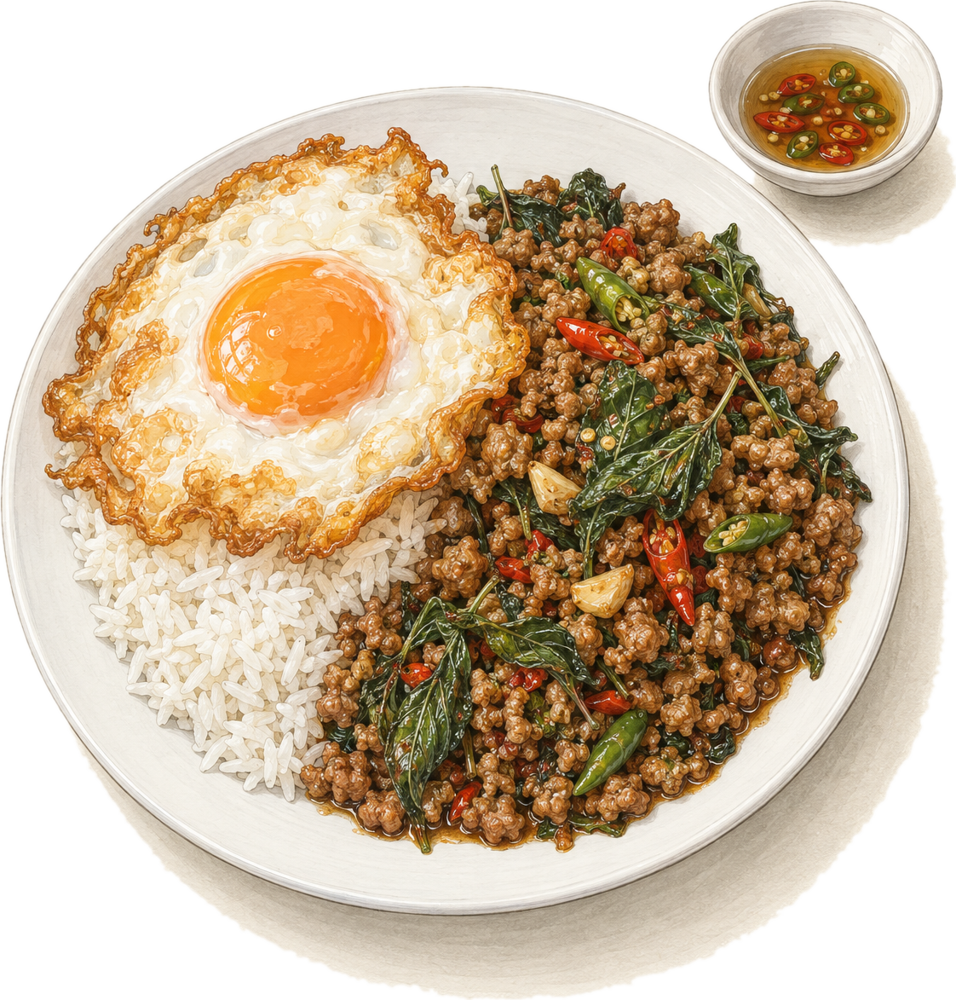
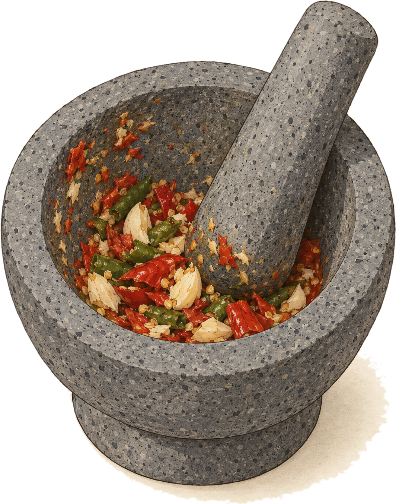
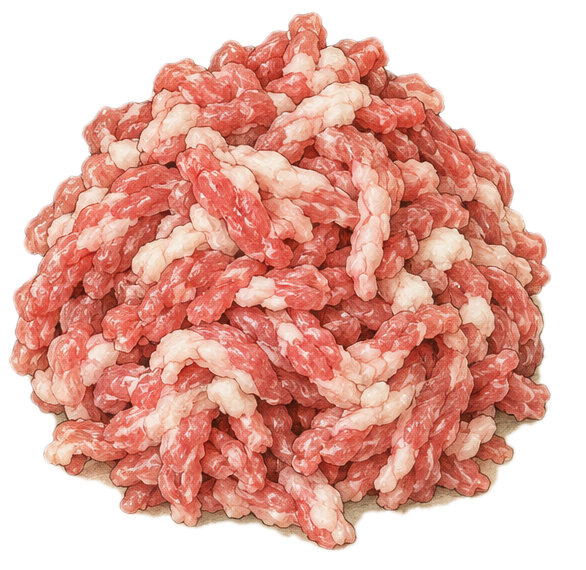
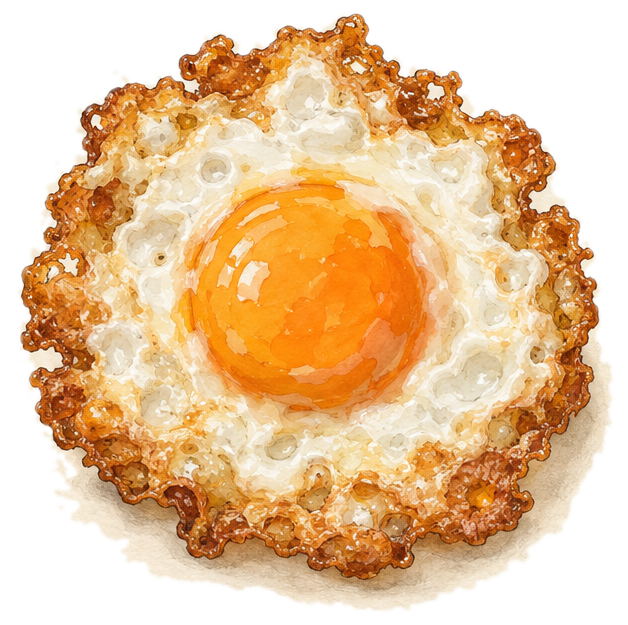
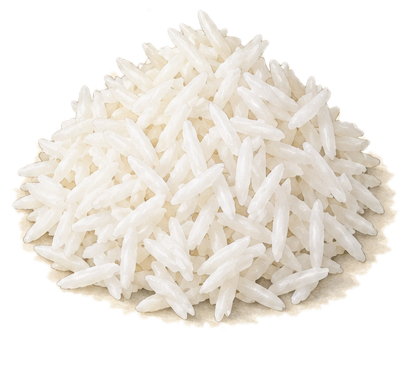
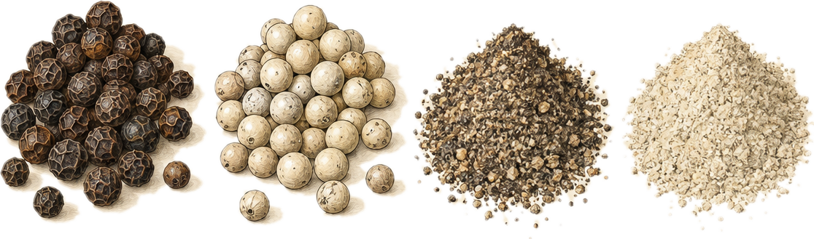

illustration
pending
pending




ผัดกะเพรา
Pad Kra Pao · Holy basil stir-fry
1
2
3
4
5
6
เค็มSalty
หวานSweet
เผ็ดSpicy
หอมAroma
รสเป้าหมาย · Target taste
Salty-led, hot, basil aroma first
พริก + กระเทียม
chillies + garlic — pound coarse, not a paste
Source: Krit · Pailin · Thompson
หมูสับติดมัน
minced pork — not extra lean
Source: Hot Thai Kitchen
น้ำปลาแท้
genuine fish sauce · nitrogen ≥ 9 g/L
Source: MoPH Notification 203
พริกไทย
peppercorns — 1954 recipe: 20, pounded
Source: M.L. Tiw, 1954
กะเพรา · holy basil
goes in last — just until wilted
ข้าว · ไข่ดาว · พริกน้ำปลา
rice · crisp fried egg · chilli fish sauce
In Thailand? · อยู่ไทย
Shopee link in bio
Ad · affiliate link
Elsewhere · อยู่ที่อื่น
Look for น้ำปลาแท้ at your Asian grocer
@channel-name